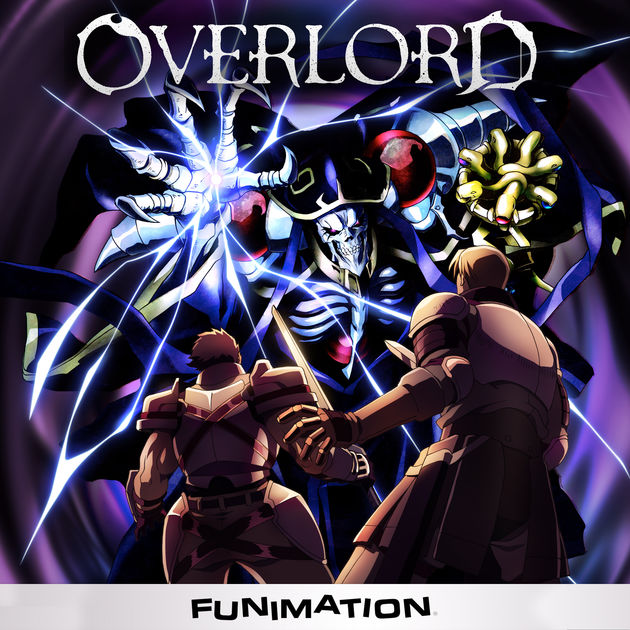

Overlord
The final hour of the popular virtual reality game Yggdrasil has come. However, Momonga, a powerful wizard and master of the dark guild Ainz Ooal Gown, decides to spend his last few moments in the game as the servers begin to shut down. To his surprise, despite the clock having struck midnight, Momonga is still fully conscious as his character and, moreover, the non-player characters appear to have developed personalities of their own! Confronted with this abnormal situation, Momonga commands his loyal servants to help him investigate and take control of this new world, with the hopes of figuring out what has caused this development and if there may be others in the same predicament.
Action, Adventure, Fantasy, Game, Magic, Supernatural